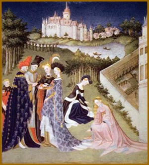
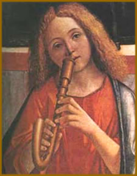

Os
embates realizados nos primórdios da razão moderna
pelos renascentistas em confronto com o obscurantismo, onde os
pioneiros da racionalidade moderna ressaltavam o esplendor da
antiguidade clássica, foi muito importante. Entretanto,
realizado, é importante esclarecer que, embora tenha sido
de fundamental importância o confronto travado pelos renascentistas
com o obscurantismo, ressaltando o esplendor da antigüidade
clássica, isso não deve, necessariamente, nos levar
a concluir, apressadamente, que a Idade Medieval era apenas uma
barbárie e a antigüidade a genealidade civilizatória
que deveria ser restabelecida. Esse postulado não faz a
devida justiça com as múltiplas conquistas e realizações
medievais. É bem verdade que o mito das trevas medievais
é insustentável, mesmo numa perspectiva eurocêntrica.
Como bem nos lembra, Erwin Panovfsky,
em sua conhecida obra: Renascimento e Renascimentos na Arte
Ocidental, o mito das trevas medievais é insustentável
numa perspectiva não eurocêntrica.
Durante a Idade Média, entre
os séculos V e XV, a Igreja Católica exerce forte
controle sobre a produção científica e cultural.
Essa ligação da cultura medieval com o catolicismo
faz com que os temas religiosos predominem nas artes plásticas,
literatura, música e teatro. Em todas as áreas,
muitas obras são anônimas ou coletivas.
Artes
Plásticas
Criada para exaltar Deus e os santos católicos,
a arte medieval difere da representação idealizada
da realidade, típica da Antiguidade Clássica. As
obras têm aspecto ornamental, com formas estilizadas. Predominam
temas bíblicos e a simetria é a base das composições.
A arte mais desenvolvida é a arquitetura, com a construção
de inúmeras igrejas.
Entre os séculos VIII e X surgem novas atividades,
como a iluminura (ilustração manual de livros),
a tapeçaria, a ourivesaria e os esmaltes. Com as invasões
bárbaras, a arte adquire certa descontração
e colorido.
No século XII, surge a arte gótica,
principal marco do período medieval. Sua origem é
incerta, mas é na França que assume suas características
mais marcantes. Depois se espalha por toda a Europa, vigorando
até o século XVI. O termo gótico surge no
Renascimento, com conotação pejorativa: godo era
sinônimo de bárbaro. Na pintura e na escultura, usadas
principalmente na decoração de templos, as figuras
são esguias e delicadas. O tamanho dos personagens depende
de sua importância social ou religiosa. Na transição
para o Renascimento, a pintura incorpora o naturalismo e noções
de perspectiva, que depois caracterizam o classicismo. Um dos
exemplos são os murais sacros do italiano Giotto (1266?-1337),
considerado o primeiro artista a assinar uma pintura.
Literatura
As formas literárias medievais típicas
são as novelas de cavalaria e o trovadorismo. Principal
prosa da época, as novelas narram aventuras guerreiras,
desenvolvendo temas ligados aos cavaleiros medievais, como a valentia,
a fidelidade ao soberano e o cristianismo. A maioria tem caráter
religioso, mas trata também do amor cortês, que idealiza
a mulher. Destacam-se as que contam as aventuras do lendário
rei Artur (século VI), do País de Gales, que teria
fundado a Ordem dos Cavaleiros da Távola Redonda.
A assimilação das novelas de cavalaria
pela Igreja, que as utiliza como instrumento doutrinário,
faz surgir A Demanda do Santo Graal. O trovadorismo,
que celebra formas idealizadas de amor, em geral platônico
e inatingível, tem início no sul da França,
no século IX, e domina o cenário literário
europeu por dois séculos. Em Portugal, só aparece
no fim do século XII e dura até meados do século
XV. Poetas-cantores compõem poemas, chamados de cantigas,
para ser cantados e acompanhados de instrumentos.
As obras classificam-se em líricas, que
compreendem as cantigas de amor e de amigo, e satíricas,
que incluem as cantigas de escárnio e de maldizer. No século
XIV, em plena transição para o Renascimento, há
grande produção literária, principalmente
na Itália. Misturam-se elementos do cristianismo com o
humanismo nascente. Francesco Petrarca (1304-1374), no Cancioneiro,
glorifica o amor e fixa a forma do soneto. Dante Alighieri (1265-1321),
na Divina Comédia , faz uma alegoria do percurso da alma
em busca de Deus. Em Decamerão, Giovanni Boccaccio (1313-1375)
mescla valores cristãos a temas burlescos.
Música
A
música medieval caracteriza-se pela combinação
das notas em "modos", ou seja, de acordo com a função
e o texto cantado, o compositor usa uma escala diferente. As principais
formas musicais são as salmodias - cantos de salmos ou
parte de salmos da Bíblia - e himnodias, cantos realizados
sobre textos novos, numa única melodia, sem acompanhamento.
Com a expansão do cristianismo, no século VI a Igreja
unifica a liturgia segundo regras do papa São Gregório
I, o Magno (540-604).
O canto gregoriano, sempre em latim, língua
oficial do catolicismo, é o único aceito nas igrejas.
As composições baseiam-se na simplicidade, na austeridade
e na homofonia - todos os cantores entoam a mesma melodia a uma
só voz. No século XI, o monge beneditino Guido d'Arezzo
(990-1050) sistematiza a notação musical, a base
para a elaboração de partituras. Os sistemas de
notação impulsionam a polifonia (duas ou mais melodias
independentes superpostas), que no século XII dá
um salto com a música dos compositores que atuam na Catedral
de Notre Dame.
No século XIII, surge a ars antiqua (arte
antiga), caracterizada pela independência rítmica
das melodias e a preocupação de compor uma música
sem dissonância.
As obras passam a ser assinadas e surge a figura
do compositor. Os principais são Petrus de Cruce e Adam
de la Halle (1250-1306). No século XIV, desenvolve-se a
ars nova (arte nova), movimento que busca romper com
as regras até então aceitas. Em plena crise da Igreja,
a música secular predomina sobre a sacra.
A atividade de compositores profanos desse período
é marcada pelos minnesangers e meistersangers
germânicos e pelos trovadores franceses. Suas composições,
de cunho popular, incluem canções de amor, canções
de cruzadas, lamentações, duelos poético-musicais
e baladas. Com maior liberdade de ritmo, aparecem novas formas
vocais, como o rondó e o madrigal. Na área religiosa,
a novidade são as missas. Um dos principais compositores
é Guillaume de Machaut (1300-1377), autor da missa polifônica
mais antiga que se conhece: Missa de Notre Dame (1364).
Teatro
Apesar de o teatro escrito no modelo greco-romano
ser proibido pela Igreja Católica, a manifestação
teatral sobrevive no início do período medieval
com as companhias itinerantes de acrobatas, jograis e menestréis.
A partir do século X, a Igreja o adapta à pregação
católica e às cerimônias religiosas. Dramas
litúrgicos são encenados dentro das igrejas. Depois
se desenvolvem outras formas, como milagres (sobre a vida dos
santos), mistérios (discutem a fé e misturam temas
religiosos e profanos) e moralidades (questionam comportamentos).
As encenações passam a ser ao ar
livre por volta do século XII e chegam a durar vários
dias. Aos poucos, os espectadores assumem papéis de atores,
conferindo às apresentações um tom popular.
Uma das primeiras obras independentes da liturgia é a francesa
Le Jeu d'Adam (1170). Nessa época, em geral, os
textos são anônimos. No século XIII, na Espanha,
surgem os autos, peças alegóricas que tratam de
temas religiosos, encenadas em palcos provisórios. A proibição
pela Igreja quanto à mistura de temas religiosos e profanos
- processo que se consolida no fim do século XIV - provoca
o surgimento das comédias medievais, totalmente profanas.
Uma peça importante é Farsa do Mestre Pierre
Pathelim, do século XIV, que apresenta advogados e
juízes como trapalhões sem caráter. Na França,
a primeira sala permanente de teatro é aberta no início
do século XV. A primeira companhia profissional da Inglaterra
surge em 1493.
Extraído
e adaptado de br.geocities.com/vinicrashbr